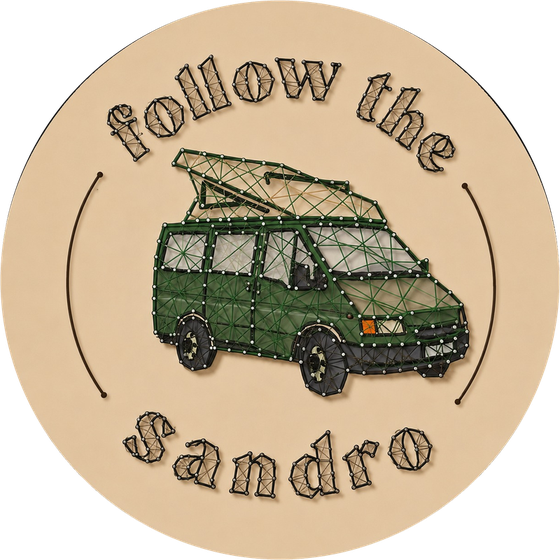

String art con la madera
que el mar devuelve
Hecho a mano · Madera recuperada · Fuerteventura
Últimas obras
Recogida a pie, playa tras playa
Cada tabla nace de un trozo de madera encontrado en las playas más aisladas de Fuerteventura: tablones de viejas barcas, cajas, ramas pulidas por el Atlántico. Nada se compra, todo se salva.
La sal, el sol y el viento deciden el color y las vetas. Por eso no existen dos obras iguales.
Mi historiaDe la playa a tu pared
Sin máquinas, sin impresiones. Solo manos, martillo y paciencia.
Búsqueda
Kilómetros de costa desierta para encontrar la madera adecuada, traída por la marea.
Recuperación
La madera se limpia, se seca y se lija a mano, sin borrar su historia.
Clavos
Cientos, a veces miles de clavos colocados uno a uno siguiendo el dibujo.
Hilo
El hilo se tensa clavo tras clavo hasta que la forma cobra vida.
Millones de clavos, uno a uno
Las obras favoritas
Tu furgo, tu ola, tu nombre
Mándame una foto o una idea: tu furgoneta, tu tabla de surf, la isla de tu corazón, un nombre o una fecha. La convierto en una obra de clavos e hilo sobre madera recuperada.
Pide una obra a medida